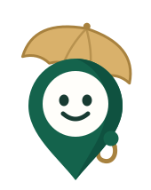
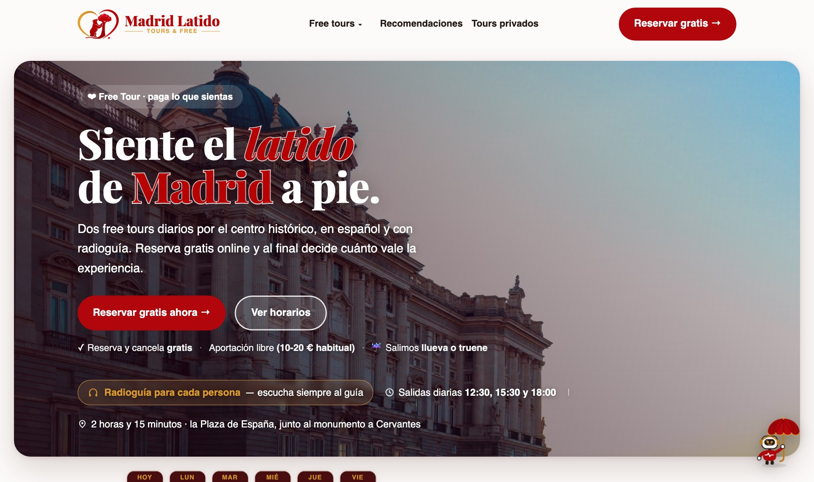
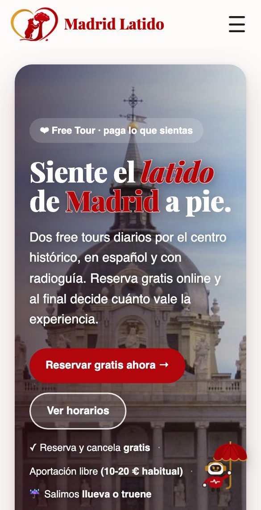

Esencial
0 €/mes
facturado anualmente · 0 €/año
Para empezar con una operación pequeña
- 1 tour · 2 guías
- 150 viajeros al mes
- Parte del día, manifiesto y cuentas
Al llegar a 150 viajeros, revisas si necesitas Pro.
Crear mi empresaPara empresas de free tours y tours a pie
Reúne las reservas, organiza las salidas y cierra las cuentas de cada tour. En el panel del encargado y en el móvil del guía.
Esencial gratuito · Sin tarjeta · 0 % de comisión de Audutor
¿Aún no tienes web? Te la hacemosEntra con tu correo y pega los enlaces de tus tours.
Con el buzón que ya tienes: no hace falta otro correo.
Reservas, guía y manifiesto, antes del primer tour.

Dónde se queda, cuánto dura, cómo se reconoce al guía: las preguntas de antes del tour se repiten cada día. GuIA las contesta con lo que tú has confirmado, y tu equipo se queda con lo que necesita a una persona.
También en tu WhatsApp. En preparación Donde ya te escriben tus viajeros: las mismas respuestas, con los datos de tu ficha.
Opcional. El primer mes de prueba no se cobra.
En la plaza del ejemplo, junto a la fuente. El guía lleva una bandera naranja.
Fuente de este ejemplo: punto de encuentro y distintivo confirmados en la ficha.
¿Cuánto dura el tour?Unas dos horas y media, con una parada a mitad de recorrido.
Fuente: duración confirmada en la ficha.
¿Puedo llevar mi perro?No tengo una norma confirmada para este tour. Paso la consulta al equipo.
Ejemplo ilustrativo. No es un chat conectado ni una promesa de tiempo de respuesta.
Cuota por viajeros y un asistente opcional. Sin comisión sobre tus reservas ni tus propinas.
facturado anualmente · 0 €/año
Al llegar a 150 viajeros, revisas si necesitas Pro.
Crear mi empresafacturado anualmente · 450 €/año
Si pasas de 2.500, lo vemos contigo antes de cambiar de plan: no se cobra nada que no hayas confirmado.
Preparar mi prueba Profacturado anualmente · 890 €/año
Si pasas de 6.000, lo vemos contigo antes de cambiar de plan.
Preparar mi prueba Plusfacturado anualmente · 1.490 €/año
Si pasas de 10.000, lo hablamos: no hay recargo automático.
Preparar mi prueba PremiumTodos los planes incluyen el buzón de reservas, el manifiesto, las cuentas y tu página de reservas (en Esencial, con la marca «con Audutor»). GuIA es opcional: 39 €/mes. El panel del operador funciona en español.
Precios sin IVA. Las reservas gratuitas y manuales no llevan recargo, pero sus viajeros cuentan en el volumen mensual. Las comisiones de plataformas y pasarelas van aparte. El primer mes es gratis al activar un plan de pago.
Equivalente anual: 450 €
Estimación según la tarifa publicada. Si tu volumen te lleva a otro plan, lo vemos contigo antes de cambiar la cuota; no se factura automáticamente. El plan anual y GuIA se cobran por años.
Para quien vende solo en plataformas. La montamos con tu marca y la conectamos a tu panel desde el primer día.


Con Pro, el alojamiento y los cambios pequeños van incluidos. Sin Pro, 19 €/mes.
Sin IVA. El dominio queda a tu nombre. Distinta de la página de reservas que incluyen todos los planes: esta es una web completa con tu diseño.
Puedes seguir vendiendo en ellas. Audutor incorpora los correos de reservas que reconoce. No equivale a una conexión que cierre disponibilidad en todas las plataformas.
No. Conectas el buzón que ya usas y Audutor lee también las reservas que ya estaban en él. Revisa las de tus próximas salidas: no todos los correos se reconocen solos.
Añade la app del guía a la pantalla de inicio y carga la salida con conexión. Puede consultar los datos guardados y anotar acciones admitidas sin señal; se sincronizan al reconectar. Comprueba ese recorrido en el móvil que usarás.
El sistema funciona sin GuIA. El asistente es opcional y cuesta 39 €/mes, además del plan. Su primer mes de prueba no se cobra.
Crea tu empresa, revisa tus tours y comprueba tus primeras reservas. Si quieres hacerlo acompañado, estamos al otro lado.